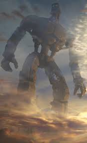
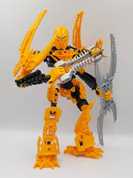

Lego Bionicleis, is the Lego most Iconic theme that they have ever made. I remeber when I was in elemtery school the first tast of Lego Bionicle I got was when I went ot my friends house to watch Lego Bionicle The Legend Reborn. It was also at this same friend house that we played with some of thier Lego Bioncile sets. From then on I was fascinated with the franchie. While I was not there not see it's begining, I also saw the end to the original Bionicle. However there was a bright light in the end of the tunle. In 2014 Lego realase it's younger sibling Lego Hero Factory. Hero Factory in its wave 2 introduced us to CCBS. CCBS stands for Charater, Creature Building System. Then in 2015, Lego shocked us a with Lego Bionicle G, but it was rebooted from the original series. The original Toawere introduced, along with the Protectors of their respective elements. But it didn't last long, as after two years of it the series ended once again. A bitter seet end to a franchies that was, and stil is loved so much. But this is not the end rumours have stated that in 2025 Lego will be bringing Lego Bionicle back.
"It is said that all endings are merely beginnings, waiting to be born. My beginning was much the same." - Mata Nui. The world of Lego Bioncile is based on the author of the lore of the Lego Bionicle series. He was suffering formm cancer and had to take medication to help witht the treatment. He then tought that what if each canister had a tiny solider to fight agints the canncer.
When Mata Nui nearly died his evil brother Makuda seeked into the brain of the Matu Nui robot. Makuda too over Mata Nui body and ejected the spirt of Mata Nui into space. But in doing this he also ejected the mask of life. Which gave Mata Nui a Chance to save the Matorni universe. Mata Nui Landed on the planted know by the locals as Baramagma. A desolated world where resorces where earn by Glator Battles. Mata Nui is reborn on this planet, where he fights to save the people of Baramaga from the united forces of the Skrall, and the Bone Hunters.